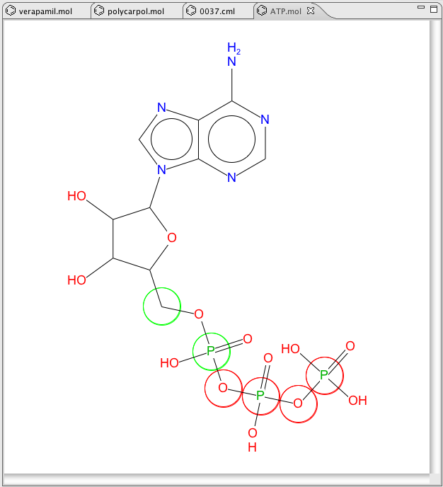
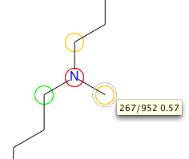

MetaPrint2D - Single Molecules
To use MetaPrint2D on single molecules, double-click on a molecular file in the
Bioclipse Navigator to open the 2D JchemPaint editor, and then click one of the
buttons in the MetaPrint2D toolbar. This
invokes the MetaPrint2D calculations and visualizes the results in the editor like below.

The results are visualized so that atoms are colored according to the likelihood
of a metabolic site being centred on this atom: High: red, Medium: yellow, Low: green,
and Very low is not coloured.
Tooltip
Hovering over an atom reveals a tooltip showing the number of hits in the
reaction centre set, the total number of hits, and the normalised ratio.
